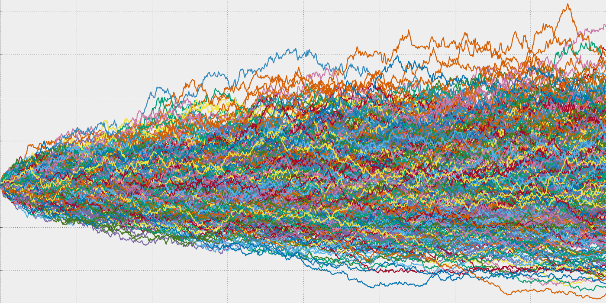
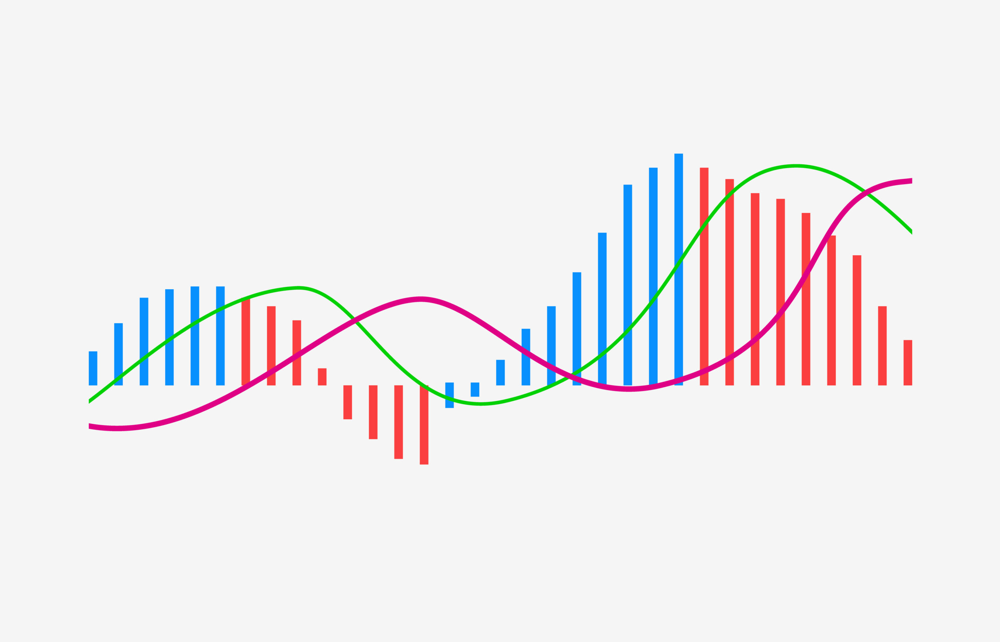
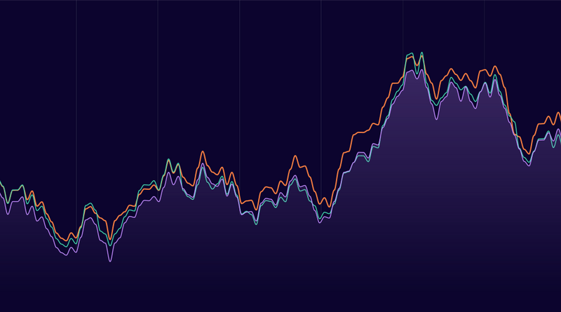
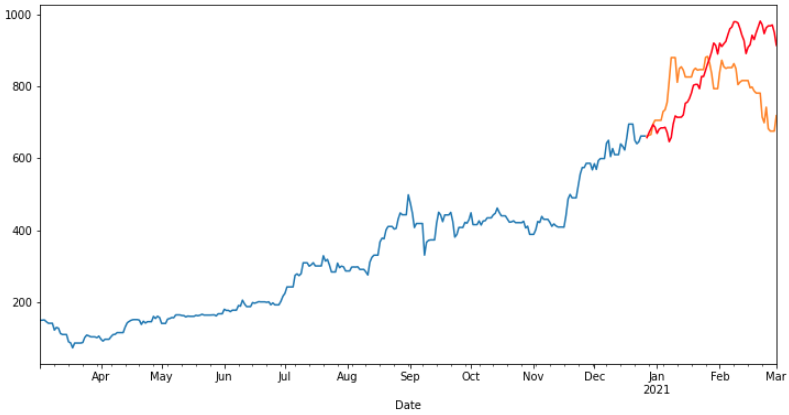
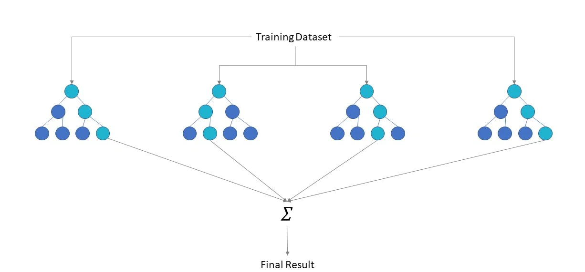
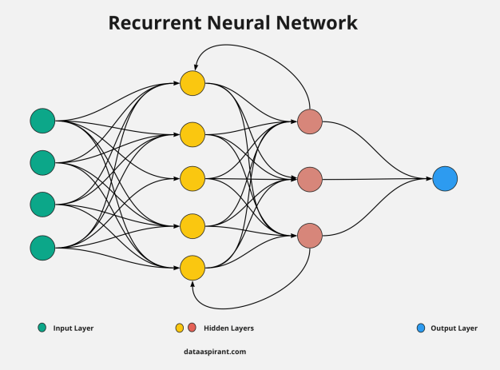

I am a Machanical Engineer (B.S, M.Eng) passionate for analytics looking to apply my skills as a Data Analyst.
My academic career has though me to formulate problems using technology and mathematical techniques
to construct efficient solutions to help make better data driven decisions. From web scratching dirty data
to making it tidy, incorporating it into a DB to query it with SQL, process and analyze it with Python/R.
constructing Machine Learning algorithms and create vizualizations for users and stakeholders
The goal of this project is to explore the idea that the systematic study of the movement in prices of businesses that comprise the supply chain of a certain company can lead to predicting the stock's price of this very company. A neural network and a Machine Learning regression models were trained with stock prices of companies that comprise the supply chain of Intel Corp's to estimate the future price of the company.
SQL queries for exploration of Coronavirus (COVID-19) data. Use of diferent agreggate functions and metrics to obtain insights such as countries with highest infection rates compared to population and likelihood of dying from COVID broken down by countries and continents, among many others.

Use of SLQ to get data from dirty to tidy. Parsing of strings values, creation of new columns, sustitutions, dropping duplicate rows using CTEs, self joins of table to fill empty entries with the proper information stored in a different part of the table. The result is a clean dataset ready for analysis.

Statistical analysis on stock market data by applying hypothesis testing, parameter estimation to see how the data is mathematically distribuited, to elucidate underlying trends and to detect outliers affecting the quality of the data. This project was part of the coursework from Probability and Statistics graduate course that I took from Columbia University's Engineering Department.

Creation of visualization dashboard and story of Netflix dataset from Kaggle to showcase insights obtained to stakeholders. This was the final project of a Coursera Tableau specialization.

Budget report was created using the Plaid API to fetch account's transactions data, then historical closing prices for a retirement portfolio were fetched with the IEX API to run Monte Carlo simulations to project the portfolio performance at 20 years. Finally, with the results from the simulation different financial scenarios were studies to come up with a retirement plan.

Moving Average Convergence Divergence (MACD) generates a crossover signal for securities technical analysis. MACD is an indicator of momentum that results useful by showing that a reversal on a securities price trend has occurred. Is there a way to forecast the crossover signal a bit sooner than by just MACD using Deep Learning? That is what this project accomplished implementing a Recurrent Neural Network.

Analysis of different portfolios to determine which outperformes the others on: volatility, returns, risk, and Sharpe ratios. Two algorithmic trading portfolios (algo1 and algo2), four that represent the portfolios of famous "whale" investors like Warren Buffett, and some from big hedge and mutual funds, as well as a custom portfolio and the S&P 500.
Libraries used on this Project: Pandas, Numpy and Matplotlib.

In this project, different time-series tools were tested in order to predict future movements in the value of the Japanese yen versus the U.S. dollar. Decomposition using a Hodrick-Prescott Filter (Decomposing the Settle price into trend and noise). Forecasting Returns using an ARMA Model. Forecasting the Settle Price using an ARIMA Model. Forecasting Volatility with GARCH. Scikit-Learn linear regression model was built to predict Yen futures.
The dataset used on this project is a weather time series recorded at the Weather Station at the Max Planck Institute Jena, Germany. In the dataset 14 different variables were recorded every 10 minutes. Some of the variables are: temperature, atmospheric pressure, humidity and wind direction. Different machine learning models were engineered in this project to predict temperature, namely, Gradient Boosting, XG-Boost and Neural Network. Data was normalized and a Principal Component Analysis was performed.

In the following project different machine learning models are employed to predict credit risk using free data from LendingClub. Credit risk is an imbalanced classification problem because the number of good loans is much larger than the number of at-risk loans, so different techniques should be employed for training and evaluating models with imbalanced classes.

Natural Language Processing to understand the sentiment in the latest news articles featuring Bitcoin and Ethereum. Sentiment Analysis,
Natural Language Processing,
Named Entity Recognition.

Analysis of cryptocurrencies market with PCA and K-means using Amazon SageMaker. Preparation of data for dimension reduction with PCA and clustering using K-Means. Reduction of data dimension using the PCA algorithm from sklearn. Clustering Cryptocurrencies Using K-Means with Python's from sklearn. Visualization of Results, deployment of notebook to Amazon SageMaker.

Long Short-Term Memory (LSTM) Neural Network (RNN) stock predictor using Bitcoin closing prices.